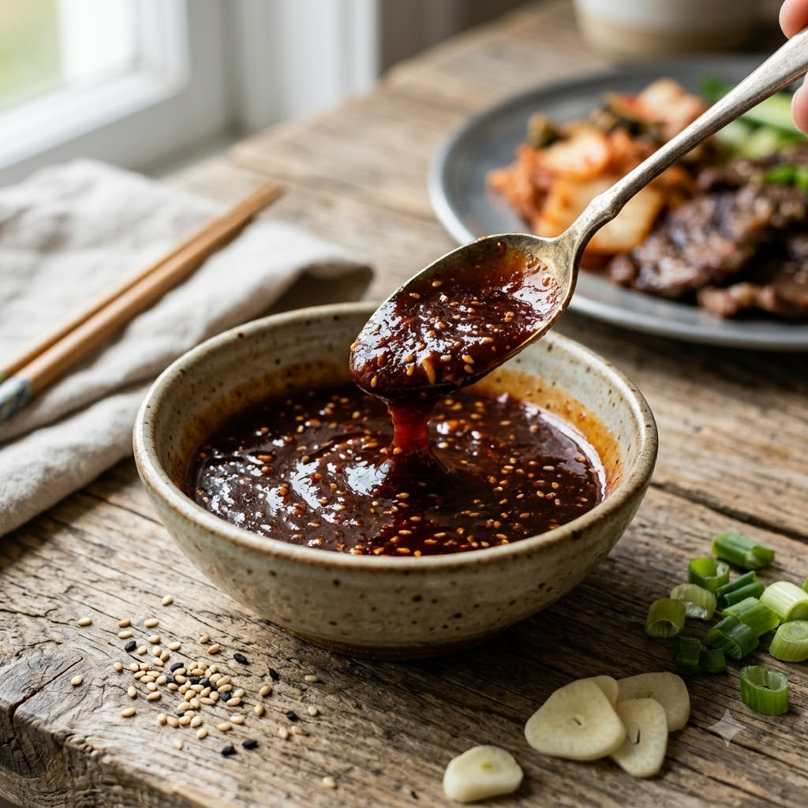

Korean BBQ Sauce (Bulgogi Marinade)

Korean BBQ Sauce (Bulgogi Marinade)
Chef Magic – Whisk/Blend 5 min — Makes ~1 cup
Vegetarian • Korean • Homemade
Ingredients
- 1/2 cup soy sauce
- 3 tbsp brown sugar
- 2 tbsp sesame oil
- 1 Asian pear or apple, grated (or 2 tbsp apple juice)
- 4 cloves garlic, minced
- 1 tbsp grated ginger
- 2 spring onions, chopped
- 1 tsp black pepper
- 1 tbsp toasted sesame seeds
Method
1Add all the ingredients except the sesame seeds to the jar; select Whisk/Blend (Speed 6–8) and blend until smooth.
2Stir in the toasted sesame seeds.
3Use immediately as a marinade (marinate chicken or paneer for at least 1 hour), or bottle and refrigerate for up to 2 weeks.
Tip: The grated pear isn't just for sweetness — its natural enzymes help tenderise whatever you marinate in this sauce.